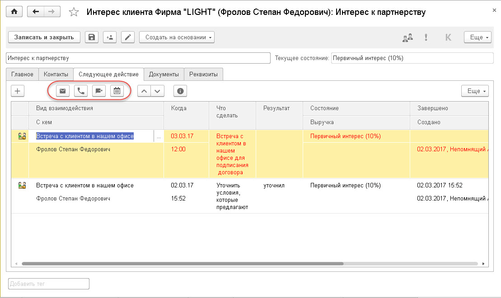

Ведение взаимодействий и их планирование – одна из основных задач, решаемых при помощи «1С:CRM». Весь учет взаимодействий и документов, связанных с ними, ведется в едином месте – в документе «Интерес».
В решении «1С:CRM» поддерживается следующий важный принцип работы: любое взаимодействие с клиентом должно быть зафиксировано в документе Интерес (новом или одном из ранее созданных). Как входящее, так и планируемое. Единственным исключением является ситуация, когда уже при приеме первого обращения клиента становится ясно, что оно потеряно и Интерес создан не будет. Такое взаимодействие фиксируется без привязки к Интересу со статусом «Потеряно». Создать такое взаимодействие можно только в «Мастере принятия обращения», а также из рабочего места, предназначеного для работы с Интересами "Мои продажи".
Просмотр текущих взаимодействий
При открытии программы "1С:CRM" открывается начальная страница. Взаимодействия для просмотра доступны в специализированных формах, которые открываются по командам "Мои продажи" или "Мои дела". Взаимодействия, связанные с Интересами следует просматривать по команде "Мои продажи". Все остальные взаимодействия следует просматривать по команде "Мои дела".
Планирование взаимодействий в документе Интерес
Документ «Интерес» является основным и, по сути, единственным местом, где возможно планировать взаимодействия с клиентом и связываться с ним. Список интересов находится в Разделе «Клиенты».
Всю хронологию взаимодействий по интересу клиента можно видеть на закладке «Следующее действие».
Есть важное требование: по каждому активному интересу должно быть запланировано хотя бы одно актуальное взаимодействие, они отображаются зеленым цветом. То есть менеджер при завершении одного взаимодействия обязан сразу же планировать одно или несколько новых взаимодействий.
Вручную взаимодействия вводятся в этой же табличной части. При планировании нового взаимодействия необходимо указать «Вид взаимодействия», дату и время и описать цель в колонке «Что сделать».
Подсказка! Для более удобного заполнения взаимодействий рекомендуется использовать горячие клавиши:
Ins - добавить новую строку
Esc - отменить сделанное изменение
Tab - перейти на следующее поле
Enter(клавиша ввода) - редактировать поле в строке / подтверждение ввода данных или сделанного выбора в списке
F4 - выбрать значение в поле из предопределенного списка
Каждый вид взаимодействия характеризуется Видом события (встреча, телефонный звонок и т.д.), Направлением (входящее или исходящее), состоянием интереса и числом баллов, служащих для оценки загрузки менеджера.
Для выбора даты планируемого взаимодействия используется Автомотиватор – это календарь, в котором наглядно видна загрузка менеджера по дням (по количеству баллов других запланированных взаимодействий).

Исходя из оценки Автомотиватора, менеджер планирует новое взаимодействие на тот день, где его загрузка не превышена.
При вводе последующего взаимодействия ему автоматически копируется текущее состояние интереса и ожидаемая выручка, введенная в предыдущем завершенном взаимодействии. Для завершения взаимодействия достаточно указать результат. После завершения текущего взаимодействия можно откорректировать ожидаемую выручку на основе результатов проведенного взаимодействия, а так же изменить состояние Интереса, перейдя на новую «ступень».
Если все взаимодействия завершены, система не даст сохранить Интерес, пока не будет запланировано новое взаимодействие.
Отрицательный результат это тоже результат, он фиксируется аналогично с положительным результатом. Если же взаимодействие было введено по ошибке, его можно отменить. Для этого нужно выбрать в контекстном меню команду «Удалить» или нажать клавишу «Del». Взаимодействие при этом не будет удалено из списка, но теперь оно будет отображаться серым цветом.
Коммуникации с клиентами по взаимодействиям
Документ «Интерес» также является тем местом, откуда осуществляются все коммуникации с клиентами.
Для этого на закладке «Следующее действие» находится панель коммуникаций.

При помощи данных команд можно отослать Контакту клиента письмо, совершить звонок при помощи интеграции с телефонией, отправить SMS-сообщение или создать Мероприятие (с возможностью синхронизации с календарями Google).
Все коммуникации фиксируются соответствующими документами (Телефонный звонок, электронное письмо, SMS-сообщение, Мероприятие) и привязываются к текущему Интересу. На закладке «Документы» интереса выводится список всех связанных документов с группировкой по состоянию интереса.
Все коммуникации фиксируются соответствующими документами (Телефонный звонок, электронное письмо, SMS-сообщение, Мероприятие), автоматически привязываются к конкретному взаимодействию в рамках которого они выполнялись. Это удобно для просмотра истории взаимодействия и сравнения отраженного в них результата с фактическими данными (введенными документами). Для отображения коммуникаций, связанных со взаимодейтвиями в виде истории, необходимо выбрать команду . Любой из таких документов пользователь может открыть нажав на ссылку соответвующую этому документу.
Для работы со списком Интересов и ведения контроля запланированных взаимодействий предназначено рабочее место "Мои продажи".